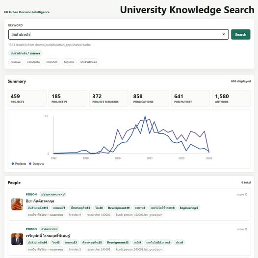

AI ลดต้นทุนการทดลอง จนมหาวิทยาลัยต้องเปลี่ยนวิธีคิดเรื่องการทำงาน
{kind=link}

เมื่อ 3-4 ปีก่อน การทำระบบค้นข้อมูลองค์ความรู้ของมหาวิทยาลัยอาจต้องใช้งบประมาณหลักแสน ต้องมีทีมพัฒนา วางระบบ ทำฐานข้อมูล ทำหน้าเว็บ และใช้เวลาหลายเดือนกว่าจะเห็นของที่พอใช้งานได้ แต่ในยุค AI งานลักษณะเดียวกันสามารถเริ่มจากprototype ที่ใช้งานได้จริงภายในเวลาไม่กี่ชั่วโมง
ตัวอย่างนี้ไม่ได้สำคัญเพียงเพราะทำได้เร็วขึ้น แต่สำคัญเพราะมันสะท้อนว่าต้นทุนของการทดลองลดลงอย่างรุนแรง ไอเดียที่เคยต้องรออนุมัติงบ รอจัดจ้าง รอ TOR และรอประชุมหลายรอบ วันนี้สามารถเริ่มจากของที่จับต้องได้ภายในวันเดียว
prototype ที่กล่าวถึงคือระบบค้นข้อมูลที่เชื่อมโยงคน โครงการ ผลงานตีพิมพ์ และ keyword ที่เกี่ยวข้องออกมาให้ดูได้ทันที ตัวอย่างการค้นคำว่า “มันสำปะหลัง” สามารถสรุปได้ว่าเกี่ยวข้องกับกี่โครงการ มีผู้เชี่ยวชาญคนใดเกี่ยวข้อง มีผลงานตีพิมพ์เท่าไร และเห็นแนวโน้มของงานตามช่วงเวลา
นี่คือภาพของระบบความรู้ที่มหาวิทยาลัยควรมี เพราะมหาวิทยาลัยมีข้อมูลและองค์ความรู้อยู่มาก แต่ถ้าข้อมูลกระจัดกระจาย ค้นยาก และเชื่อมกันไม่ได้ ก็ยากที่จะใช้ในการตัดสินใจ สร้างความร่วมมือ หรือออกแบบยุทธศาสตร์ที่แม่นขึ้น
ความเปลี่ยนแปลงจริงไม่ใช่เร็วขึ้น แต่คือทดลองได้ถูกลงมาก
ในระบบเดิม ไอเดียจำนวนมากตายก่อนเกิด ไม่ใช่เพราะไม่ดี แต่เพราะต้นทุนการเริ่มต้นสูงเกินไป ต้องเขียนโครงการ ขออนุมัติ จัดจ้าง ทำ TOR และรอการตัดสินใจหลายชั้น กว่าจะได้ทดลองจริง บริบทก็อาจเปลี่ยนไปแล้ว
AI เปลี่ยนสมการนี้ เพราะทำให้การลองของบางประเภทมีต้นทุนต่ำลงมาก องค์กรจึงไม่จำเป็นต้องเริ่มจากการอนุมัติโครงการใหญ่เสมอไป แต่สามารถเริ่มจาก prototype เพื่อทดสอบสมมติฐาน ดูคุณค่า ดูข้อจำกัด และค่อยตัดสินใจว่าจะพัฒนาเป็นระบบจริงอย่างไร
โลกใหม่ให้รางวัลกับองค์กรที่ทดลองเร็ว เรียนรู้เร็ว และทำให้ไอเดียเป็นระบบจริงได้เร็ว
มหาวิทยาลัยไม่สามารถแข่งขันด้วยการวางแผนเก่งอย่างเดียวอีกต่อไป เพราะโลกเปลี่ยนเร็วกว่า cycle การวางแผนแบบเดิม สิ่งที่สำคัญขึ้นคือความสามารถในการทดลองเร็ว เรียนรู้เร็ว และเปลี่ยนไอเดียให้เป็นระบบจริงได้เร็ว
AI ไม่ได้ทำให้ทุกอย่างง่าย และไม่ได้แทนการคิดเชิงระบบ แต่ทำให้ข้ออ้างแบบเดิมใช้ได้น้อยลงมาก หากต้นทุนการทดลองต่ำลง องค์กรก็ต้องถามตัวเองว่าทำไมยังทำงานด้วยจังหวะเดิม กระบวนการเดิม และกรอบตัดสินใจเดิม
คำถามไม่ใช่ใช้ AI ทำอะไร แต่คือองค์กรจะปรับวิธีคิดให้ทันต้นทุนใหม่ได้อย่างไร
คำถามที่ควรถามจึงไม่ใช่เพียง “เราจะใช้ AI ทำอะไรได้บ้าง” เพราะคำถามนั้นยังมอง AI เป็นเครื่องมือแยกส่วน คำถามที่ลึกกว่าคือมหาวิทยาลัยจะปรับวิธีคิด วิธีทำงาน และวิธีตัดสินใจให้ทันกับต้นทุนใหม่ของโลกได้อย่างไร
ถ้าต้นทุนของการทดลองลดลง มหาวิทยาลัยควรออกแบบระบบงานให้รองรับการทดลองที่รับผิดชอบ วัดผลได้ เรียนรู้ได้ และต่อยอดได้ ไม่ใช่ปล่อยให้ AI กลายเป็นเพียงเครื่องมือส่วนบุคคล แต่ต้องทำให้มันเปลี่ยนความสามารถขององค์กรในการสร้างของจริง